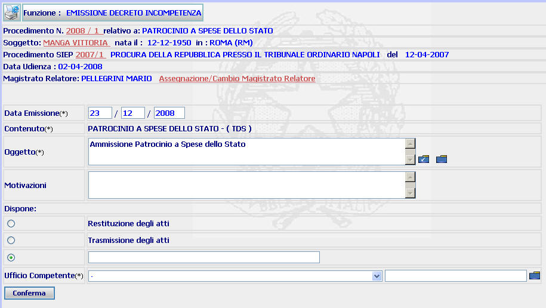
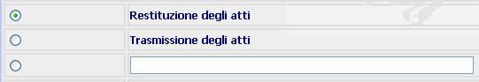
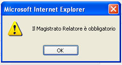
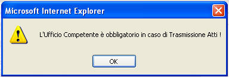

EMISSIONE DECRETO INCOMPETENZA: La funzione consente di inserire la data di emissione del decreto di incompetenza, di modificare/aggiungere gli oggetti e di modificare/integrare, se necessario, il Magistrato relatore. Consente inoltre di inserire la motivazione e l'Autorità competente a decidere.
LE MASCHERE VIDEO
La funzione viene realizzata attraverso la maschera sottostante, attraverso la quale è possibile visualizzare i dati del procedimento ed inserire quelli relativi alla data ed agli oggetti dell'emittendo provvedimento

COME FARE PER ...
| Per visualizzare il dettaglio del procedimento Sius l'utente deve cliccare sul link relativo all'Anno/Numero del procedimento Sius evidenziato in rosso; |
|
| Per visualizzare il dettaglio del soggetto l'utente deve cliccare sul link relativo al cognome/nome del soggetto evidenziato in rosso; |

| Per visualizzare il dettaglio del procedimento Siep l'utente deve cliccare sul link relativo all' Anno/Numero del procedimento Siep evidenziato in rosso; |

| Per assegnare o modificare il Magistrato relatore l'utente deve cliccare sul link relativo all'Assegnazione/Cambio Magistrato Relatore evidenziato in rosso ed accedere all'apposita funzione Assegnazione/Cambio Magistrato Relatore |
|
Per completare l'operazione di emissione del decreto di incompetenza, l'utente deve: |
Inserire la data di emissione del provvedimento
Inserire nuovi oggetti o modificare quelli precedentemente inseriti attraverso il Pulsante di Ricerca da Lista Predefinita
ovvero attraverso il Pulsante di Ricerca da Lista Predefinita
Inserire la motivazione del decreto
Indicare se si tratta di restituzione o di trasmissione degli atti, ovvero di altra tipologia di diposizione attraverso gli appositi radio button

Inserire l'Ufficio competente attraverso l'apposita tendina ed il relativo Pulsante di Ricerca da Lista Predefinita
Selezionare il bottone
CAMPI
I campi da compilare sono i seguenti:
| Data Emissione | Campo (obbligatorio) nel quale va inserito la data di emissione del decreto |
| Oggetto |
Campo (obbligatorio) da selezionare, nel caso in cui non risulti
assegnato almeno un oggetto ovvero nel caso in cui l'oggetto/oggetti
assegnati debbano essere modificati, attraverso il
Pulsante di Ricerca da Lista Predefinita
|
| Motivazioni | Campo a testo libero dove è possibile inserire la motivazione dell'incompetenza (che verrà riportata sul documento generato dal sistema) |
| Dispone ... | Campo nel quale è possibile inserire, dopo aver selezionato il relativo radio button, il tipo di disposizione (diverso dalla "Restituzione degli atti" e della "Trasmissione degli atti") che determina l'incompetenza e che verrà riportata sul documento generato dal sistema |
| Ufficio competente | Campo (obbligatorio) che consente di indicare, attraverso l'apposita tendina, l'A.G. competente a decidere il procedimento in oggetto |
| Sede |
Campo nel quale va indicata la sede dell'A.G. competente a decidere,
digitandola o selezionandola attraverso il
Pulsante di Ricerca da Lista Predefinita
|
PULSANTI
Oltre al
pulsante
 facente
parte del gruppo di
pulsanti di "Uso Comune" è presente il seguente pulsante:
facente
parte del gruppo di
pulsanti di "Uso Comune" è presente il seguente pulsante:
|
PULSANTE |
DESCRIZIONE |
|
|
A fronte di tale comando, il sistema visualizza la lista predefinita degli oggetti legati al contenuto selezionato. |
|
|
A fronte di tale comando, il sistema visualizza la lista predefinita di tutti gli oggetti selezionabili |
BOTTONI
Oltre ai comandi funzionali relativi al menù verticale è presente il seguente bottone:
|
COMANDI |
DESCRIZIONE |
|
|
A fronte di tale comando, il sistema dopo aver verificato la validità dei dati specificati, presenta la maschera di dettaglio decreto incompetenza |
CONTROLLI
Il sistema effettua i seguenti controlli:
| Se si omette di inserire il Magistrato relatore, il sistema fornisce il seguente messaggio: |

| Se si seleziona il radio button "Trasmissione degli atti" e non si inserisce alcun destinatario, il sistema fornisce il seguente messaggio: |

| E' necessario selezionare almeno un oggetto; in caso contrario il sistema fornisce il seguente messaggio: |
| Nel caso in cui non venga inserita la sede dell'A.G. (ovvero la sede venga indicata in maniera errata), il sistema fornisce il seguente messaggio: |